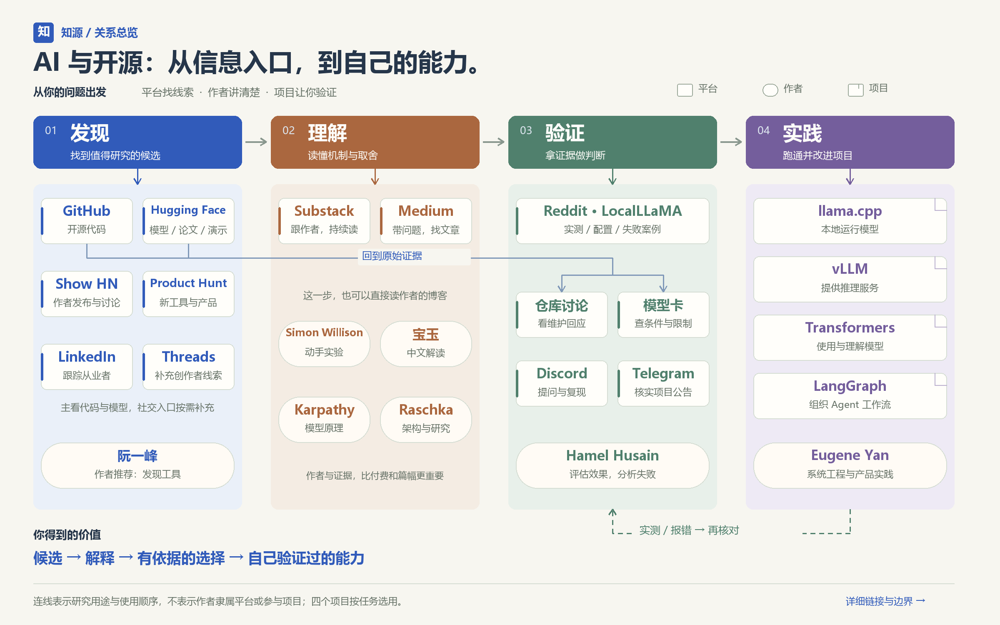

平台提供入口
GitHub 的热度、社区的点赞、专栏的付费门槛，都需要结合具体内容判断，不能单独证明质量。
AI & OPEN SOURCE · A PERSONAL FIELD GUIDE
平台帮你发现，作者帮你理解，
证据与项目，帮你形成自己的判断。
把 AI 与开源信息源连成「发现 → 理解 → 验证 → 实践」的路径：少花时间漫游信息流，选出适合的工具，读懂技术取舍，并留下可复查、可复用的实践记录。

信息源入口原帖 10 个平台 + Hugging Face
具体作者按内容与当前需求选择
研究路径从问题出发，回到实践
01 / OUR UNDERSTANDING
收藏一个网站，只是多了一个入口。能否帮助你做出更好的选择、解决一个问题，才是这次讨论采用的衡量标准。
GitHub 的热度、社区的点赞、专栏的付费门槛，都需要结合具体内容判断，不能单独证明质量。
优先寻找代码、原始资料、运行配置、对比方法与失败案例。把作者的结论和自己的验证分开记录。
找模型、读原理、查报错，需要不同入口。带着一个问题进入，完成一次验证后离开。
02 / THE SOURCE MAP
无需每天逛完所有平台。
先选择你现在想做的事。
试试「模型」「教程」「反馈」，或恢复全部入口。
03 / READ BEYOND THE HEADLINE
把「看见一个项目」
推进到「理解一个选择」。
从作者出发 · 持续跟踪
作者经营自己的订阅专栏，通过邮件、网页与 App 分发内容。适合连续阅读同一领域的研究分析，观察观点怎样随新证据更新。
从问题出发 · 寻找文章
作者、主题与刊物共同组织的长文平台。适合搜索具体教程、实现过程和项目复盘，继续追到文中的原始资料与代码。
这是使用侧重点的区别。两者都可以关注作者、发现文章，平台本身不保证质量。
Substack 通常按具体专栏付费；Medium 主要通过平台会员阅读会员限定文章。免费内容可先用来判断适配程度。订阅机制来源 ↓
04 / A SMALL, USEFUL READING LIST
按你当前的用途安排阅读。
下面的顺序是建议，不是全网排名。
先建立一份小清单。GitHub、Hugging Face、LocalLLaMA 用于发现与核对；Simon Willison 与阮一峰用于补充阅读。其他作者随问题加入，每次只深入一个候选项目。
05 / FROM INFORMATION TO ACTION
下面是建议的研究路径。
示例帮助组织工作，不代表项目已被验证。
A NOTE FOR YOUR NEXT PROJECT
把问题、出处与验证边界放在一起。勾选只是整理进度，不能自动证明内容可靠。
问题与勾选仅用于本次页面生成，不上传，也不自动保存。
SOURCES & LIMITS
平台定位、订阅与分发方式，引用官方说明和作者主页。原帖的效率承诺未获得数据支持。
优先级、阅读建议和研究路径，来自我们的讨论，按 AI 与开源项目研究的用途安排。
查看过所列入口与部分内容样本；未逐篇审阅，也未在本项目中运行所列第三方软件。入口与规则可能变化。